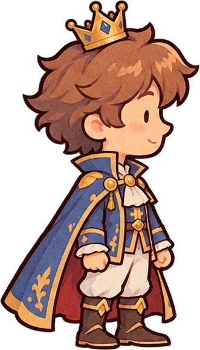
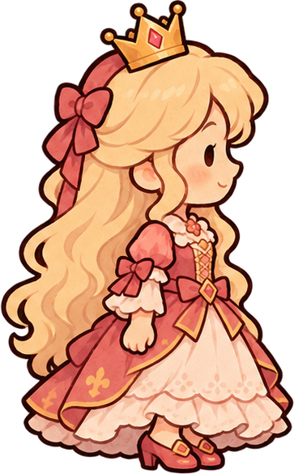

Выбери место встречи
Дворец, сад или сцена: у каждого места свой характер.
Независимые игры · сделано с воображением
Здесь живут игры, в которых хочется задержаться.
Первая история уже ждёт на страницах книги.
Одна игра сейчас. Больше миров — впереди.


Полка с играми
Маленький театр. Большие последствия.
Ты не выбираешь реплику из списка.
Ты собираешь саму сказку.
Дворец, сад или сцена: у каждого места свой характер.
Подари розу, доверь тайну — и посмотри, что случится дальше.
Меняй встречи и замечай, как одна деталь меняет всё.
Загляни внутрь
Книга уже открыта
20 историй. Четыре главы. Одна необычная книга.
Скачай бесплатное демо и познакомься с нашим театром.
О проекте
IkeyWorld — место для наших игр. Начинаем с «Театра забытых судеб»: уютной головоломки о героях, случайных встречах и неожиданных последствиях.
Сейчас доступна бесплатная демоверсия. Со временем здесь появятся новые истории и новые игры.